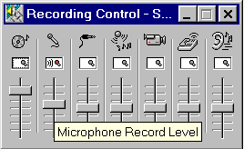

Menu i Datalyse
Lydmålinger med fourieranalyse
Svævninger
Tonegenerator
Sweep
Amplitude (t, f(t))
Datalyse tester, om der sidder et lydkort i pc'en.
Har det 16 bits opløsning og frekvenserne 11.025 kHz, 22.05 kHz og 44.1 kHz, så kan apparatet vælges og der kan måles lyd med fourieranalyse. Bemærk, at lydkortet ikke behøver at være af en bestemt type, men det skal have de nævnte funktioner via windows interface.
Wavefiler kan læses og lydmåler gemmes i waveformat.
Ved måling og afspilning af lyd, er antallet af punkter ændret fra 4096 til 100000. Hermed kan man optage i ca. 4,5 sekunder ved 22050 Hz. Ved indlæsning af en wavefil læses de første 100000 målinger.
Ved løbende fourieranalyse kan man overføre tid og frekvens til memoen. Holdes Ctrl nede udføres fourieranalyse og grafen tegnes undervejs. Holdes shift nede overføres tid og frekvens uden at der laves fourieranalyse. Det giver flere målinger pr tid. Efterfølgende kan memoen indsættes i tabellen og en (t, f)-graf kan tegnes.
Man kan bladre i fourierspektret med PageUp og PageDown. Bladres med PageDown og holdes Alt nede, overføres tid og frekvens til memoen. (se ovenfor)
I Indstil kan autoscale slås fra ved fourieranalyse.
Her er et klaver c (440 Hz) og klaver kvint og et bækken. Prøv, om du kan høre at i klaverets c, vokser 1 overtone (880 Hz) op og forsvinder igen. Og bækkenet lyder blødere og blødere, dvs. de høje frekvenser dør ud. Prøv også at sammenligne en violin med en bratch. Eksemplerne målt med Datalyse og gemt som wavefiler. Download wavefiler.
De to frekvenser udsendes på hver sin kanal og stødtonen høres og svævningerne vises på grafen.
Ikke alle frekvenser kan vælges. Det skyldes, at det ellers ikke ville lyde godt.Lydes udsendes som en pakke af et antal perioder. Når pakken er afspillet begynder lydkortet forfra på pakken. Når pakken skal indeholde et helt antal perioder af både frekvens 1 og frekvens 2, kan ikke alle frekvenser vælges.
Desuden kan lydkortet benyttes som en tonegenerator. Der kan afspilles rene toner og klange. Bemærk, at en klang er mere end blot den konstante tone. Det er også måden som lyden vokser op på og aftager igen. Man kan tilføje overtoner og skifte mellem afspilning af ren tone og klang.
Vha. lydkortet kan man kan lave et sweep fra Datalyse. Parametrene indstilles her, og sweepet startes, når man vælger »OK«. Herefter sender Datalyse lyd ud på pc'en højttalere og måler samtidigt med mikrofonen tilsluttet lydkortet. Minimum tid pr frekvens er 0,05s og maksimum tid pr frekvens er 4,0 s.
Før start, skal man indstille sit lydkort til at måle lyd vha. mikrofonen (og kun denne) og afspilning af lyd på højttalere og gerne andre enheder, men ikke mikrofonen! Hvis lydkortet ikke kan afspille lyd og måle lyd samtidigt, må man udskifte det!
Hvis checkboksen: »Mål lyd« er afmærket, vil datalyse tegne en graf over mikrofonsignal som funktion af frekvensen. Er checkboksen ikke afmærket tegnes frekvensen som funktion af tiden.
Pc'ens mikrofon har et område på 16 bit [-32767; 32768]. Under lydmålingerne finder Datalyse minimum og maksimum for mikrofonsignalet og omregner amplituden til %
Man kan vise resonans i et paprør og udregne lydens hastighed i luft vha. pc.ens lydkort. Se øvelsesvejledningen.
Vha. lydkortet kan man undersøge resonans i et rør. Det kan være en gennemsigtig plasticslange eller et glasrør.
Man kan bruge pc'en højttalere som lydgiver, eller man kan benytte en tonegenerator.
Sæt fx tid pr måling til 2 sekunder og træk mikrofonen til næste position, når du har hørt lydpulsen fra pc'ens højttaler.
Hvis måling af lyd ikke virker, kan det være fordi indgangen ikke er enablet i opsætningen af lydkortet. Et 16 bits lydkort giver et måleområde fra [-32768 til 32768]. Hvis amplituden på lydmålingerne er for lille (nogle hundrede og ikke tusinde) skal forstærkningen indstilles, se afsnittet nedenfor eller mikrofonen skal udskiftes så dens amplitude passer til indgangen på lydkortet. Desuden skal man bruge en mikrofon med stereostik til et lydkort med stereostik og visa versa.
I windows vælges volumenkontrol | Indstillinger | Egenskaber:
Afmærk »Vis Mikrofon« for indspilning, så kan lyd optages.
Eksempel: (kun mikrofon afmærket og record level justeret)

I windows kan flere programmer afvikles samtidigt. Det gælder fx også afspilning af musik og måling af lyd i Datalyse. Man kan fx høre Peer Kjær Andersens foredrag samtidigt med at Datalyse viser fourieranalyse af de indlagte lydeksempler.
Interface til lydkortet er lavet af René Hemmingsen.